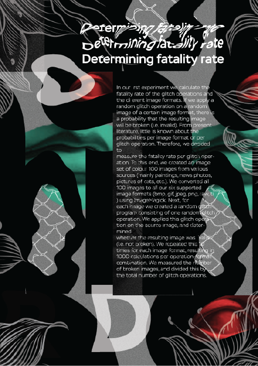

О Дизайне
Мы создали большое количество различных проектов. Мы родились и живем в Восточной Европе. Наши проекты разные, но они всегда связаны одинаковыми визуальными эффектами, о которых вы можете прочитать далее. В наших работах мы в основном показываем визуальные эффекты современного искусства, и мы хотим создавать новые уникальные визуальные эффекты в наших собственных проектах. Этот сайт предназначен для того, чтобы людям было проще связаться с нами, и мы бы хотели, чтобы все наши проекты были в одном месте и выглядели как одно целое.

Видео Продакшн
Мы создаем видео любой сложности. У нас есть опыт в записи, редактировании видео, а также со всем, что связано с видео. В нашем распоряжении есть профессиональные камеры, стабилизаторы и дроны, благодаря чему мы можем делать профессиональное видео. Мы надеемся, что вы заинтересованы и зайдете в портфолио, чтобы посмотреть наши видео.
67° 38.284' 0" (N), 53° 0.4123' 0" (E)


В дополнение к созданию цифрового (следового) индекса, гличи также создают новые артефакты поп-культуры через эстетику гличей. На самом базовом уровне сбой является результатом неправильной передачи данных от отправителя к получателю во время транскодирования информации. Неожиданные изменения происходят во время отправки и / или получения информации, изменяющей предполагаемый информационный продукт. Эти преобразования изменяют и задерживают оригинальный информационный продукт, оставляя после себя новый, непреднамеренный и неавторизованный артефакт: глитч.
О нас
Некоторые из наших работ размещены на этом сайте, но вы можете увидеть всю работу в нашем портфолио на Behance. Мы начали эту работу однажды в колледже. Нам нравится делать такие проекты, потому что в них мы можем показать свое мышление и свои навыки в создании проектов. Мы делаем это в основном для самих себя, чтобы показать людям, что дизайн может также выглядеть как искусство. В основном мы используем визуальные эффекты, такие как глитч или datamosh, databend и так далее. Искусство сглаживания и эволюционное искусство имеют ряд сходств. Оба используют своего рода «генерировать и тестировать» парадигму, в результате чего программное обеспечение генерирует ряд возможностей, а выбор выполняется художником или программным компонентом. Manon и др., Которые не могут создать сбой изображения, можно даже вызвать сбой, и эта изменчивая природа псевдоалеаторной формы искусства. Применение операции с ошибкой к изображению очень просто, но создание интересного визуального контента далеко не тривиально. Поскольку Manon et al state \ Glitch art - это как фотография; это легко сделать, но это сложно сделать хорошо. «Несмотря на то, что интересный визуальный контент с использованием Glitch отличается разнообразием, это отнюдь не случайный процесс. Применение одних и тех же операций с ошибками на одном и том же изображении приведет к тому же окончательному изображению. В нашей системе EvoArt мы поддерживаем шесть типов изображений для Glitch art; Windows Bitmap (bmp), gif, jpeg, raw ...